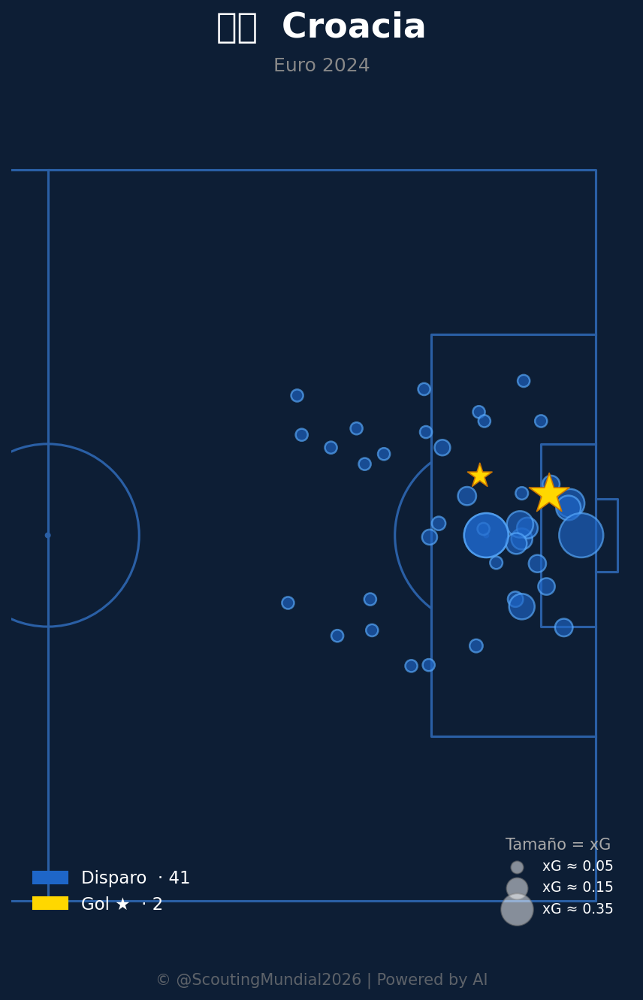
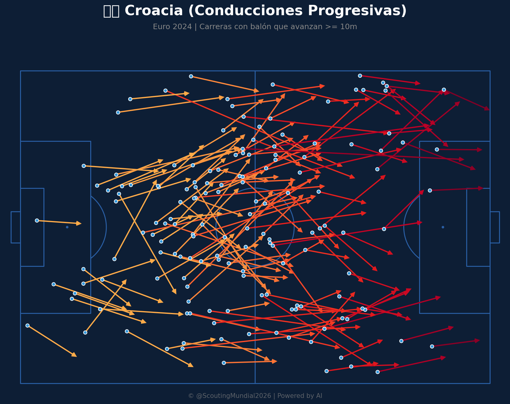
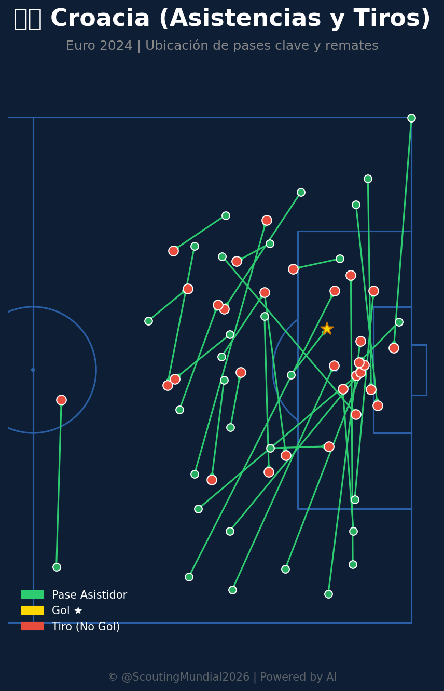

Grupo L
 Croacia
Croacia
Inglaterra vs Croacia
📅 2026-06-17 · 🕒 21:00 (Local)
Inglaterra

2 - 0
PRONÓSTICO IA
Croacia
📅 2026-06-17 · 🕒 21:00 (Local)
Croacia
Inglaterra es el favorito claro para imponerse en este encuentro, respaldado por una marcada diferencia en eficiencia ofensiva, control posicional y variantes tácticas.
Este enfrentamiento presenta un gran contraste táctico, con una Inglaterra caracterizada por su circulación asociativa fluida y paciencia posicional frente a una Croacia con un bloque defensivo sumamente replegado y compacto.
Inglaterra despliega una ofensiva sofisticada y multifacética. Su mapa de calor muestra una distribución más equilibrada en toda la cancha, con presencia constante en las tres zonas.
La red de pases de Inglaterra muestra múltiples canales de ataque. Sus laterales son especialmente activos, generando superioridad numérica en las bandas. Croacia no tiene la capacidad de desplegar defensores de igual calibre en esas zonas, lo que permitiría a Inglaterra crear desequilibrios constantes.
Inglaterra organiza su defensa con capas claras. Su presión de arriba funciona como filtro, y si esa falla, cuenta con cobertura de espacios interiores bien estructurada. Croacia, al ser más compacta, corre el riesgo de ser desbordada.
Con casi 13 goles en la competencia y un xT acumulado considerablemente alto, Inglaterra convierte sus oportunidades. Croacia genera situaciones pero no las aprovecha — esto es crítico en un partido decisivo.
La densidad de conexiones en la red de pases de Inglaterra es superior. Pueden jugar a ritmos controlados o acelerados según necesidad. Croacia tiende a jugar en bloque, lo que limita su flexibilidad táctica.
Croacia presenta una estructura ofensiva ordenada y sumamente defensiva.
El mapa de calor de Croacia muestra concentración defensiva fuerte en el centro. Su línea de cuatro es compacta y difícil de perforar directamente. Los equipos que intentan romper por el medio contra Croacia tienen histórico de fracaso.
Aunque genera menos oportunidades, las que crea surgen frecuentemente de recuperaciones y transiciones rápidas. Su red de pases, aunque más simple, es directa y efectiva en momentos de cambio de juego.
Croacia ha llegado a semifinales y finales de competiciones internacionales. Saben cómo mantenerse en partidos ajustados y entienden la importancia de no cometer errores contra equipos superiores.
Aunque no es evidente en los mapas, Croacia históricamente es fuerte en balones aéreos desde ambas fases. Esto podría ser un arma si decide jugar largo ocasionalmente.
1. Eficiencia ofensiva abrumadora (13 goles vs 2 de Croacia).
2. xT acumulado superior en todas las zonas de ataque.
3. Red de pases compleja y variada con gran aporte por bandas.
4. Presión alta selectiva muy agresiva.
5. Mayor recambio y profundidad de plantilla.
1. Vulnerabilidad a contraataques rápidos a las espaldas de los laterales.
2. Tendencia a la frustración si las bandas son cerradas con éxito.
1. Estructura defensiva central muy compacta.
2. Capacidad para competir en partidos de máxima exigencia mental.
3. Transiciones rápidas y directas tras recuperación de balón.
4. Experiencia en torneos de eliminación directa.
1. Falta de creatividad ofensiva profunda (dependencia extrema de Modrić).
2. Presión defensiva baja y pasiva en el centro del campo.
3. Poca efectividad de cara a portería (2 goles en 41 disparos).
4. Desgaste físico ante el ritmo alto impuesto por el rival.
El enfrentamiento ratificó el favoritismo de los Tres Leones en un partido de absoluto dominio táctico. Inglaterra propuso un bloque alto de presión desde el arranque, sofocando las conexiones en el centro del campo que intentaban Modrić y Kovačić. La defensa croata resistió de forma compacta en el centro del área chica durante el primer tercio del encuentro, pero la amplitud ofensiva inglesa por las bandas comenzó a resquebrajar el bloque.
Al minuto 38, tras una incursión profunda de Trippier por izquierda y un centro preciso al segundo palo, Kane puso el 1-0 para la escuadra inglesa. Croacia intentó reaccionar mediante transiciones directas buscando romper el retroceso inglés, pero la presión de la zaga británica neutralizó los pocos balones profundos que nacían de Modrić.
En el segundo tiempo, Inglaterra continuó controlando el tempo de juego. El gol de la tranquilidad llegó en el minuto 71, cuando Bellingham aprovechó una desorganización en el despeje aéreo croata tras un tiro libre y definió cruzado frente al arquero para sellar el 2-0. Croacia luchó con pundonor en los minutos finales, pero el ritmo de juego inglés terminó de agotar a los croatas, cerrando la victoria a favor de Inglaterra de forma contundente y sin conceder oportunidades claras.







